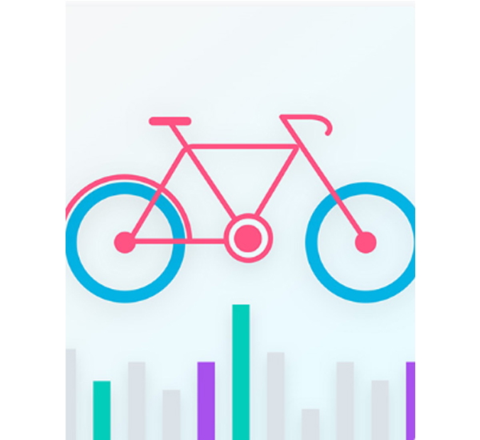
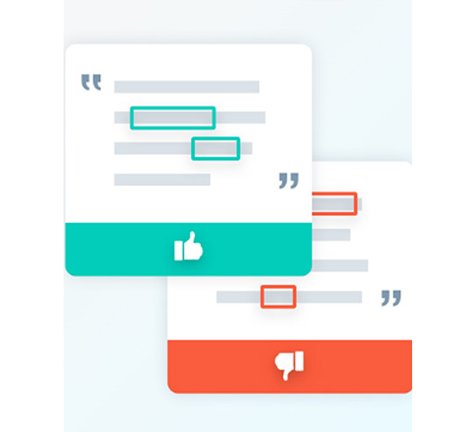
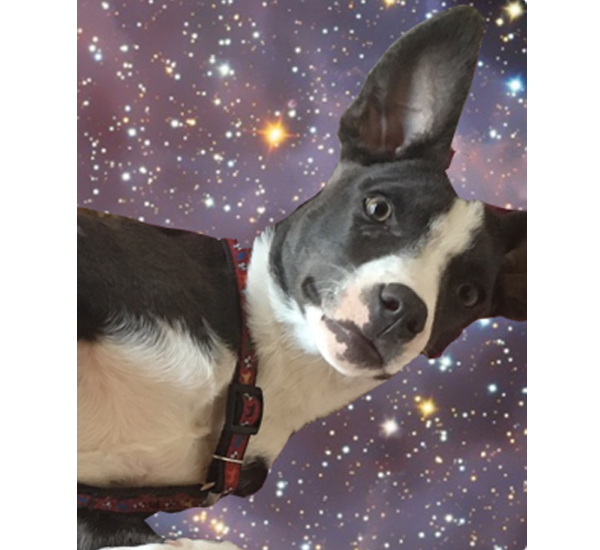
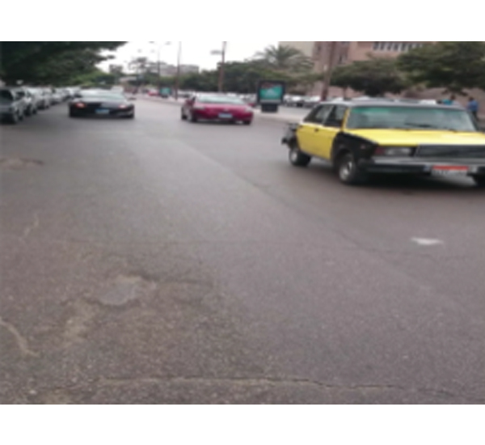
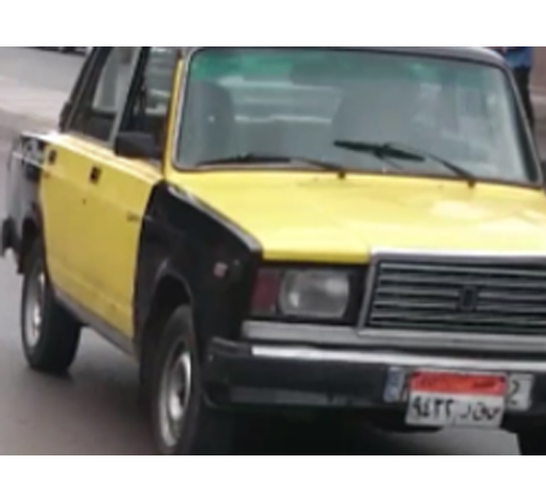
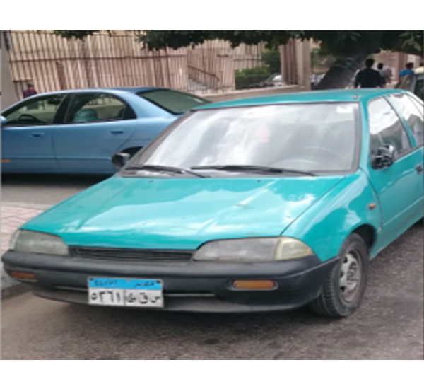
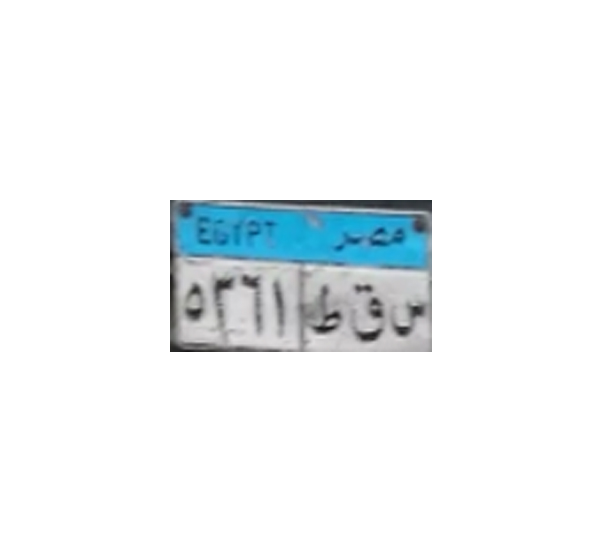
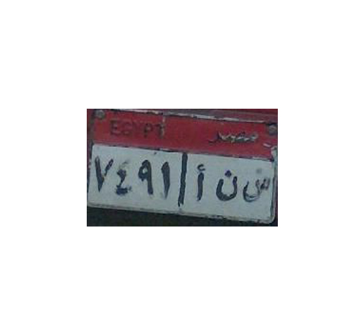
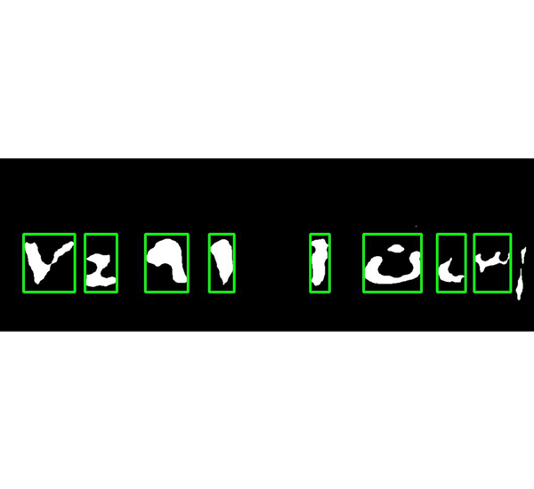

- Deep Learning
- Graduation Project
- College & Work
View Snapshots & Description

View Snapshots & Description

View Snapshots & Description

Egyptian Car License Plate Information Detection
This project is concerned with cars exceeding speed limit captured by the radar, main idea is to automate this system by implementing an application which extract license information from images e.g. taken by radar. Our point of concern is to apply the process on Arabic license plates. We prepared a dataset for various kinds of car plates found in Egypt, and we tried to cover all possible real-life conditions. After that we made a survey to know any kind of work related to ours, then we prepared a structure and a full documentation for it. Finally, we started the implementation phase in which we were divided into three groups working in three different modules. First one is Vehicle Detection & Plate Localization, second one is Image Segmentation, third one is Feature Extraction & Character Recognition. I worked on the third module along with my team mate. We started using ML algorithms like SVM but the results were very disappointing. So, we migrated to Deep Learning and started to use Keras Module and Transfer Learning in Feature Extraction. We tried all available models, and finally, we managed to reach best accuracy of about 98.12%.
- My Graduation Project team is made of 7 members, and the Project is divided into four main blocks among us as follows:-
- For the final Graduation Project Thesis click on the image
1) Vehicle Detection Module
- This is a very simple module to help us extract the nearest car from the photo
- We used a pretrained model with car classes and altered its classes to meet only our requirements
Credits goes to:- Ahmed Ehab & Mohamed Ahmed Youssef
Input Image

Output Image

2) Plate Localization Module
- We used transfer learning to train our model which will not only reduce time and effort but will give better results
- This works by removing the last layer in the network ad re constructing it as this layer is responsible for assigning the classes to our candidates
Credits goes to:- Ahmed Ehab & Mohamed Ahmed Youssef
Input Image

Output Image

3) Image Segmentation Module
- In this module, our input is the output of the Localization module, which is an image of an exact plate
- We process the plate, going through multiple processes, where we will clearly explain each of them throughout the following section, in order to get an output which is multiple images, an image for each character in the plate
Credits goes to:- Mo'men Ashraf, Alaa-el-din Medhat & Fady Ahdy
Input Image

Output Image

4) Feature Extraction & Character Recognition Module
- In this module the input is received from the Image Segmentation Module
- We started implementing this model using classical Machine Learning algorithm like SVM. Then we migrated to Deep Learning & started to use Keras Module to implement CNN. We tried different models using transfer learning and improved the dataset by cleaning and augmenting it
Credits goes to:- Mahmoud Gamal & Hassan Mahmoud (Me)
Input Image
Output Image